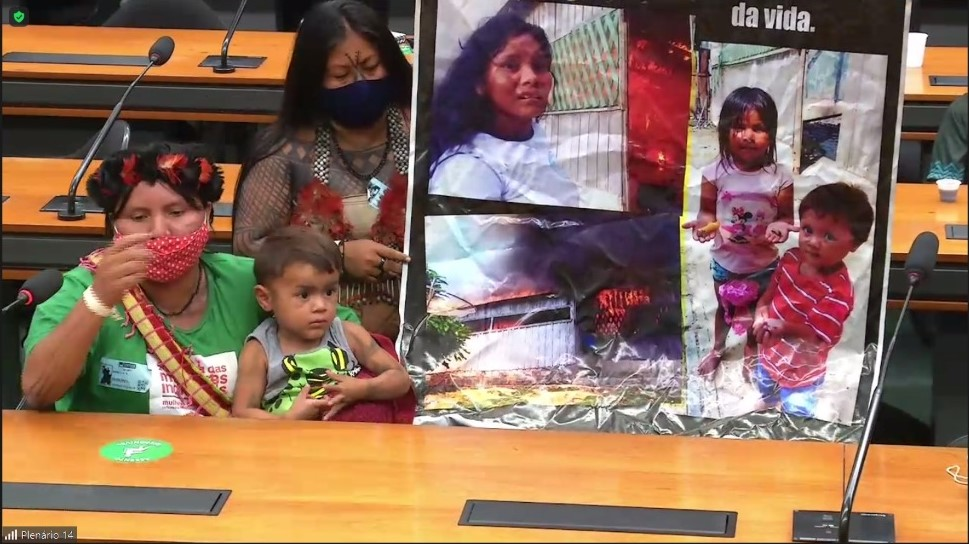

18.03.2022 - Em audiência pública na Câmara dos Deputados, ONU Mulheres defende direito de mulheres e meninas de viver sem violência

Daiane Griá, do povo Kaingang, de 14 anos, e Raissa Silva, de 11 anos, do povo Guarani Kaiowá, assassinadas em agosto deste ano, foram homenageadas pela deputada federal Joenia Wapichana (Rede-RR) na abertura da audiência pública “Violações e violências contra as mulheres indígenas no Brasil”, ocorrida nesta quinta-feira (9/9), na Câmara dos Deputados. O encontro foi organizado pelas Comissões de Direitos Humanos e Minorias e de Defesa dos Direitos da Mulher da Câmara Federal no contexto da II Marcha Nacional das Mulheres Indígenas, que reunirá cerca de 4 mil ativistas de todo o país em Brasília. “Há décadas, as mulheres têm estruturado esforços em prol da igualdade através de várias articulações para políticas públicas específicas para as mulheres indígenas, cenário que também foi destacado na I Marcha das Mulheres Indígenas, que aconteceu em 2019. Desta vez, mais de 4 mil se encontram em Brasília para dar continuidade à luta das mulheres em prol dos direitos dos povos indígenas”, considerou a deputada federal Joenia Wapichana. Entre as convidadas da audiência pública, a ONU Mulheres frisou a amplitude da violência contra as mulheres e meninas indígenas. “São vítimas de múltiplos atos de violência: abuso sexual e estupro, violência doméstica, assassinatos, desaparecimentos, prostituição forçada, tráfico humano e o uso não consensual de suas imagens como objetos decorativos e exóticos pela mídia, são alguns dos tipos de violência que as mulheres indígenas enfrentam”, disse a representante Anastasia Divinskaya. Vulnerabilidades de gênero e território foram mencionadas como fatores de violação dos direitos de mulheres e meninas indígenas. “Elas também experimentam formas particulares de violência chamadas violência ecológica, referindo-se ao impacto prejudicial das políticas e práticas terrestres que afetam a saúde das mulheres, estilos de vida, status social e sobrevivência cultural. Os abusos e violações são alarmantes e constituem uma forma de violência estrutural, sendo as mulheres indígenas vítimas das realidades de sua vida cotidiana e da violação dos direitos e recursos, garantidos aos cidadãos”, acrescentou a representante da ONU Mulheres Brasil. As respostas às múltiplas formas de violência contra as mulheres e meninas indígenas demandam diversas soluções políticas. “Para proteger os direitos das mulheres indígenas, tanto uma mudança de paradigma como o desenvolvimento de uma abordagem multidimensional é necessária. A ONU Mulheres está disponível para cooperar com todos os poderes, mulheres indígenas, seus grupos e organizações para apoiar o Brasil na identificação de soluções adequadas às necessidades das mulheres e meninas indígenas“, reiterou Divinskaya.  Nos seus discursos, parlamentares ressaltaram como as mulheres indígenas são afetadas pela condição de gênero e residentes em territórios ameaçados. “Nas invasões às terras e territórios indígenas, as primeiras que sofrem diretamente são as mulheres, porque muitas vezes são elas as responsáveis pelo cuidado da terra, dos recursos naturais e acessam diretamente a água e o solo. Quando degradam as terras, as mulheres sentem diretamente os impactos dessa contaminação”, constatou a deputada Joenia Wapichana. Para a deputada federal Vivi Reis (PSOL-PA), “o desafio que temos hoje é seguir nos fortalecendo, seguir mostrando a força que cada uma trouxe consigo e vai se multiplicar, vai ocupar todos os lugares daqui de Brasília para que não seja feita uma política que tenha como alvo o corpo das indígenas”. Autoridades públicas – Márcia Brandão Zollinger, procuradora da República da 6ª Câmara de Coordenação e Revisão do Ministério Público Federal (MPF), apresentou em sua fala uma série de projetos de lei que afetam diretamente os povos indígenas. “Negar a participação dos povos impactados por essas obras nos processos de licenciamento ambiental é negar voz aos povos indígenas. É negar a participação desses povos nas decisões que os impactam e é, então, consolidar violência e violação de direitos que atingem as vidas, os territórios e os corpos desses povos indígenas”, observou. Esequiel Roque do Espírito Santo, secretário adjunto de Políticas de Promoção da Igualdade Racial do Ministério da Mulher, da Família e dos Direitos Humanos, falou sobre um plano de enfrentamento criado com foco nas meninas indígenas pelo alto índice de casos de violência. “Não se pode relativizar a violência contra a mulher indígena. São direitos fundamentais, são direitos humanos, que precisam ser protegidos e precisam ser enfrentados para que possamos ter um resultado e alcançar o fim desse problema”, salientou Vozes das ativistas – Maria Betânia Mota de Jesus, do povo Macuxi, secretária do Movimento de Mulheres Indígenas do estado de Roraima, defendeu que as mulheres indígenas sejam ouvidas e ocupem espaços de decisão para garantia do bem viver. “Todos os dias as ameaças e os retrocessos estão à vista de muitos, porém nós, povos indígenas, estamos fazendo o nosso papel de denunciar a várias instâncias que precisam também se alertar e estar ao nosso lado. Essa nossa defesa é de fato pela nossa Mãe Terra, pelo nosso bem viver. A gente também traz a tristeza de muitas meninas, jovens, mulheres, que estão também sendo mortas pelos muitos que rodeiam os nossos espaços e territórios querendo invadir. Ecoamos as nossas vozes em defesa do que é mais sagrado: nossos territórios e nossos direitos” Elizângela Baré, representante da Articulação Nacional das Mulheres Indígenas Guerreiras da Ancestralidade (ANMIGA), registrou: “A marcha para nós mulheres indígenas se iniciou 521 anos atrás. Hoje estamos nos manifestando porque o sistema não está atuando conforme as nossas diversidades. Nós precisamos sair da invisibilidade para que a gente possa ser ouvida. Hoje queremos reflorestar a mente da humanidade”. A voz ativista de Alessandra Munduruku, representante da Associação das Mulheres Munduruku na Articulação dos Povos Indígenas do Brasil (APIB) , bradou pela sinergia entre povos indígenas e territórios. “O que seria de nós sem os nossos rios, sem a floresta, sem os nossos territórios? Todos os projetos aprovados no Congresso afetam nós mulheres na base. Nós mulheres não estamos mais conseguindo dormir, plantar, colher. Não estamos mais conseguindo ficar dentro das nossas comunidades tranquilas. Violência não é só bater, violência também é contra as nossas florestas, quando não demarcam as nossas terras, quando invadem as nossas aldeias. Quando afeta nossos direitos de viver no território temos que sair e dizer que estamos vivos”.